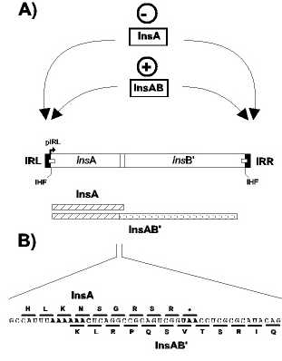

|
 |
Organisation of IS1. A) Structure of IS1. Left (IRL) and right (IRR) inverted terminal repeat are shown as filled boxes. Relative positions of the insA and insB' reading frames together with their overlap region are shown within the open box representing IS1. The IS1 promoter pIRL partially located in IRL is indicated as a small arrow. IHF binding sites located partially within each terminal IR are shown as small open boxes. The InsA protein is represented as a cross-hatched box beneath. The InsA and InsB' components of the InsAB' frameshift product are shown as crosshatched and stippled boxes respectively. Arrows indicate the probable region of action of InsA and InsAB' proteins. The effect of InsA and InsAB' on transposition is shown above.
B) RNA and protein sequence in the crossover region between the two
open reading frames. Codons shown above the RNA sequence show the product
of direct translational readout. Those below show the product of a -1
translational frameshift. The heptanucleotide A6C frameshift sequence involved
in production of InsAB' from the wildtype IS1 coding sequence is indicated
in bold type as is the UAA termination codon for InsA. |